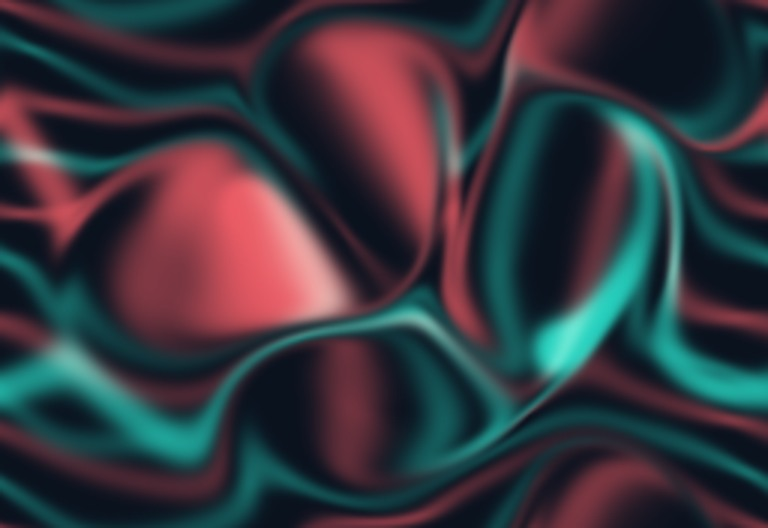

Lab manual
Ink Tunnel
Drag a brush through two colored tracers. A CUDA program transports the velocity field, adds the brush impulse, solves a pressure equation, corrects the velocity, and uses the corrected motion to transport the dye. The opposite sides of the grid connect. A plume leaving the left edge enters on the right.

Run the experiment
In a fresh Course PowerShell opened from G:\CUDA-Studio, run Set-Location .\labs\flow once for the commands in this manual. Then run python flow.py --check, then python flow.py. Use the same Python, driver and NVRTC setup as the swarm renderer. python flow.py --cpu-check exercises the scalar projection math without a GPU.
| Control | Action |
|---|---|
| Drag | Add local momentum and ink. The net displacement accumulated between simulation steps sets the impulse, up to its cap. Holding still keeps adding dye. |
| 1 / 2 / 3 | Global-memory Jacobi / fused two-sweep reference / editable Student |
| D | Cycle dye, divergence before projection, and divergence after projection. Both divergence views share one color scale. |
| Space | Freeze the same tentative velocity field for repeatable pressure comparisons |
| [ / ] | Change sweep count by two. While frozen, immediately reproject the same input. |
| R / N | Recompile the saved student kernel / reset the two dye bands and vortex seeds |
Session 1 · Where did the volume go? (45–60 minutes)
For Week 5, Day 4, follow the dye and divergence views through one projection. Compare the before and after fields using the sweep counts in your lesson. Fusing two sweeps in the following section is an optional implementation project.
- Drag a short stroke, press Space, and press D twice. Record the RMS divergence before and after pressure projection. Switch between D views at the same frozen step. Red and blue mark opposite signs of local expansion. Which parts of the stroke act as a source or sink?
- With the view frozen, press
[until the display reads zero sweeps. Then use]to try 8, 24 and 64. At each count copy thems pressuretime and the HUD line that startsRMS divergence. The values on either side of the arrow are the RMS divergence before and after projection. Themax defectcompares the corrected divergence and the pressure residual cell by cell. Choose a target RMS after projection and report the cheapest tested budget that meets it, or record that none did. - In the code, pressure and dye sit at cell centers. One velocity component sits on each right face, the other on each bottom face. For unit spacing, the divergence
Dis right minus left flux plus bottom minus top flux. The gradientGon the right face isp[right] − p[center]. Sketch a 3 × 3 periodic grid and expandD(G(p))at the center. Which coefficient multiplies the center pressure? - Let
u*be the tentative face velocities,b = D(u*), andL = D G. The corrected velocity isu = u* − Gp. Apply the divergence operator to both sides. Rewrite the result using onlyb,Landp. On a frozen frame, which two fields should the program be able to compare cell by cell?Compare the two fields
Linearity gives D(u) = b − Lp. The left side uses corrected velocities. The right side uses the pressure and the original divergence. The HUD’s max defect is the largest absolute difference between those two fields at any cell. The RMS residual measures the size of the imbalance still present. Even at zero sweeps, the two fields can agree while the imbalance remains large.
- Explain why the periodic divergence has nearly zero mean, and why adding any constant to pressure changes neither the correction nor the residual. Follow a tracer through backtracing and bilinear interpolation in
flow.cu. Bilinear interpolation and damping smooth the dye and velocity. The two dye sources continuously add new tracer. NVIDIA GPU Gems fluid simulation chapter
Session 2 · Reuse the stencil in time (90–120 minutes)
- Draw an even periodic grid with alternating pressures +1 and −1 and
b = 0everywhere. Pick a cell whose old value is +1. Work out its new pressure after one undamped Jacobi update, which takes the mean of its four neighbors. Then calculate the weighted update, which moves two thirds of the way from the old value toward that mean. For each method say whether the pattern flips sign and whether its amplitude shrinks.Compare the checkerboard calculation
All four neighbors are −1. The undamped result is −1. With relaxation weight 2/3, the new value is (1/3)(+1) + (2/3)(−1) = −1/3. The negative cells behave symmetrically.
- In
student.cuhkeepSTUDENT_SPANat 1 for this first edit. A block must write a 16 × 16 tile after one pressure sweep. Draw the old pressure values needed by its corner, edge and interior workers. Choose a rectangular shared array that covers them. Decide how the threads will fill it and when they must wait for each other. In a partial block every thread must reach the shared-memory barrier. Only valid output coordinates may store a result. - For an optional second edit, make the same block produce a 16 × 16 tile after two sweeps. Start at a corner output. Mark the first-sweep cells it reads, then mark the old pressures those first-sweep cells need. Work out the two rectangular patch sizes before inspecting
fusedinflow.cu. SetSTUDENT_SPANto 2 once your version produces two sweeps per launch. Check seven sweeps as well as eight so the one-sweep remainder runs.Compare the patch dimensions
The supplied fused kernel loads 20 × 20 old pressures, computes an 18 × 18 rectangle of first-sweep values and writes a 16 × 16 tile. A rectangle includes corner slots that a single five-point cross does not use.
- Press R. Run the checks. They compare pressure and both velocity components against a scalar oracle on 9 × 7 and 31 × 19 grids after 0, 1, 2, 7 and 34 sweeps. A separate one-cell translation crosses the periodic seam. On the 31 × 19 manufactured case, 34 sweeps reduce RMS divergence from about 0.552 to 0.00667. Test an intentionally wrong apron offset so you recognize a failing boundary check. Restore the correct offset.
- Benchmark equal mathematical work with
python flow.py --bench --width 192 --height 128 --sweeps 24 --frames 41. Repeat at 513 × 257 and with 25 sweeps. Each mode advances its own identically initialized state and rotates position in the run order across frames. Results exclude five warm-up steps. The program compares the raw FP32 values of both tracer and velocity fields within an absolute tolerance of 5×10⁻⁶, rejects non-finite values, and requires identical final dye pixels. It reports p50/p95 CUDA event times for the pressure sweeps, excluding right-hand-side construction, projection, dye transport, and display.
One RTX 3070 run at 192 × 128 and 24 sweeps measured 0.0748 ms median for the baseline and 0.0451 ms for the fused variant. Both produced an RMS divergence of 0.02021, and the maximum operator defect was 1.8 × 10⁻⁷. The benchmark includes the intervals between pressure launches. Larger grids change the balance between repeated halo loads, shared-memory traffic and launch overhead. On your 5070, give the fastest mode and median at each tested size. If the ranking stays the same, record that result.
A hand-check for the stencil
Draw a periodic 4 × 4 grid. Set b = +1 in one cell, b = −1 in the cell immediately to its right and zero elsewhere. Start with zero pressure. After one weighted sweep the pressures at those two cells are −1/6 and +1/6. At the positive source, Lp = 1/6 − 4(−1/6) = 5/6, so its residual b − Lp is +1/6. On the same grid find the residual (a) at the negative source and (b) one cell directly above the positive source. Write the four neighboring pressures you used in each calculation.
Compare the two residuals
At the negative source Lp = −1/6 − 4(+1/6) = −5/6, so the residual is −1/6. Directly above the positive source, one neighbor has pressure −1/6, the other three have zero pressure and the cell has zero pressure. Its residual is +1/6. A neighboring pressure can change a cell’s residual even when its own source and pressure are zero.
Next-day retrieval · What does the simulation establish?
Sketch the five steps from velocity advection to tracer advection. Derive the residual identity without opening the source. Propose one change that preserves the mathematical update and one that changes its accuracy. State which test would distinguish them.
For the Day 25 checkpoint, compare a grid simulation with a known smooth solution. From this directory run python -B vortex_refinement.py. It evolves one component of the periodic Taylor–Green velocity under diffusion to a common physical time. The default 32×32 and 64×64 runs give RMS errors of approximately 0.0003694 and 0.00009190. Keep the final physical time and viscosity fixed. At the same 32 × 32 and 64 × 64 sizes, predict whether halving the time-step factor from 0.2 to 0.1 will raise or lower the RMS error. Then compare your prediction with python -B vortex_refinement.py --sizes 16 32 64 --alpha 0.1. Trace the periodic indexing and the shortened final step in the CPU experiment.
For the mathematical reading, OpenAI reports a forced three-dimensional continuum construction that starts smoothly and develops a finite-time singularity. Axial stretching is central to the construction. Here you are experimenting with a bounded number of degrees of freedom in two dimensions, scaled pressure, numerical advection and a fixed time step. List the hypotheses of the reported construction alongside the assumptions in this lab. Explain what grid refinement can teach you about numerical error and why a rapidly changing image cannot certify a continuum singularity. OpenAI's announcement, paper and Lean proof